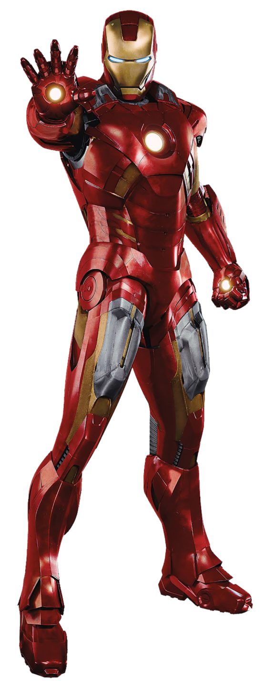
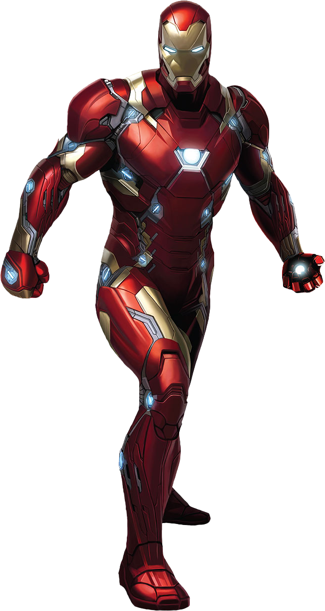
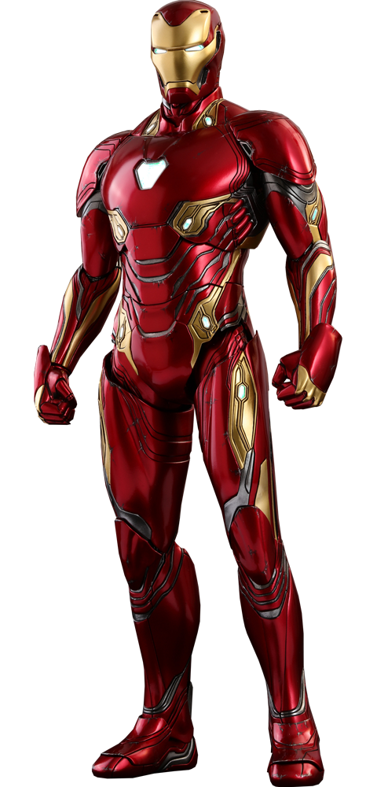
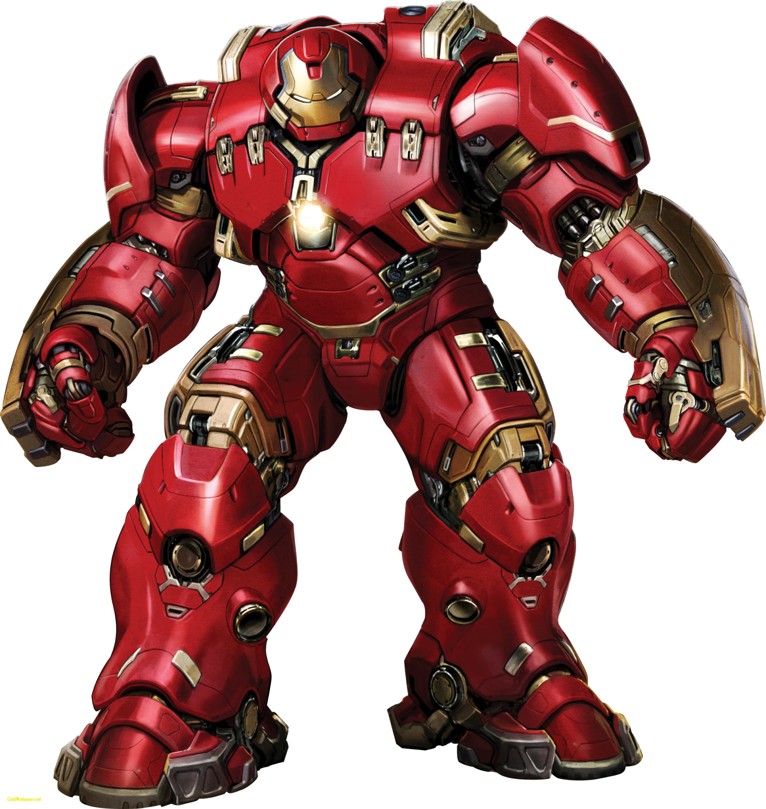

Mark III

La Mark III es una de las primeras armaduras completamente funcionales de Iron Man. Tony Stark la diseñó con una combinación de colores rojo y dorado, además de incorporar armas, propulsores y mayor resistencia.
A lo largo de los cómics y películas, Tony Stark desarrolló distintas versiones de su armadura. Acá te muestro algunas de las más conocidas.

La Mark III es una de las primeras armaduras completamente funcionales de Iron Man. Tony Stark la diseñó con una combinación de colores rojo y dorado, además de incorporar armas, propulsores y mayor resistencia.

La Mark XLVI fue utilizada por Tony Stark en Captain America: Civil War. Es una versión compacta y resistente, diseñada para el combate y equipada con diferentes armas y sistemas de defensa.

La Mark L aparece en Avengers: Infinity War y utiliza nanotecnología para formarse alrededor del cuerpo de Tony Stark. Puede crear armas, reparar daños y adaptarse rápidamente a diferentes situaciones de combate.

La Hulkbuster es una armadura de gran tamaño creada para resistir la fuerza de Hulk. Cuenta con una estructura reforzada, mayor potencia física y sistemas especiales para contener los golpes de un adversario extremadamente fuerte.